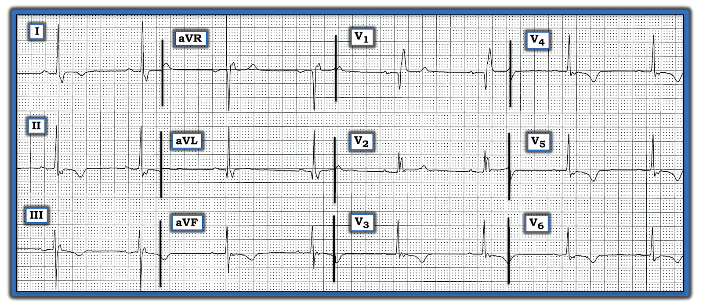
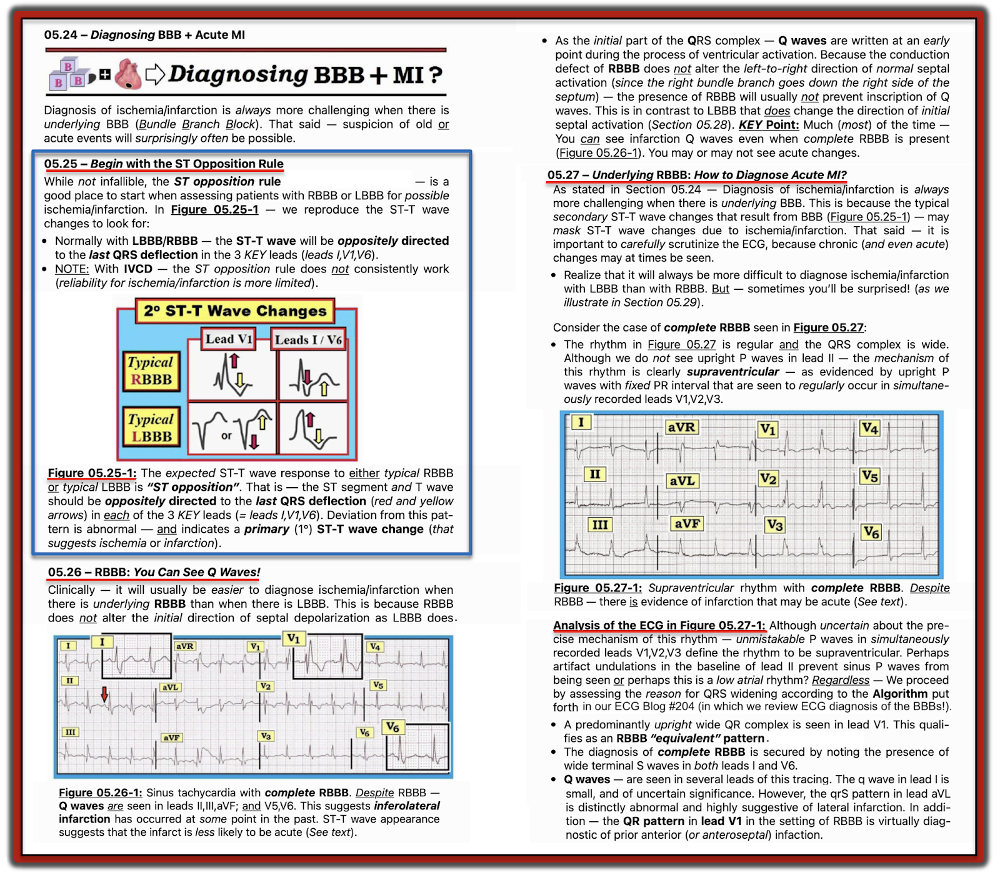
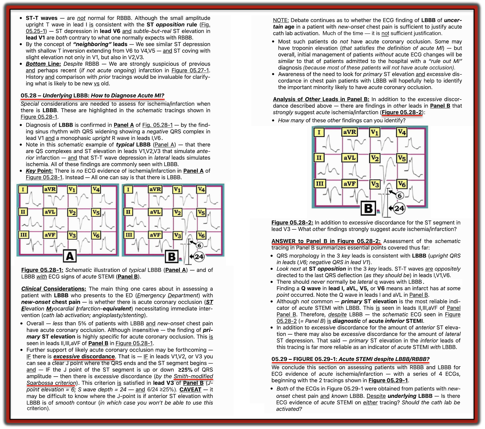
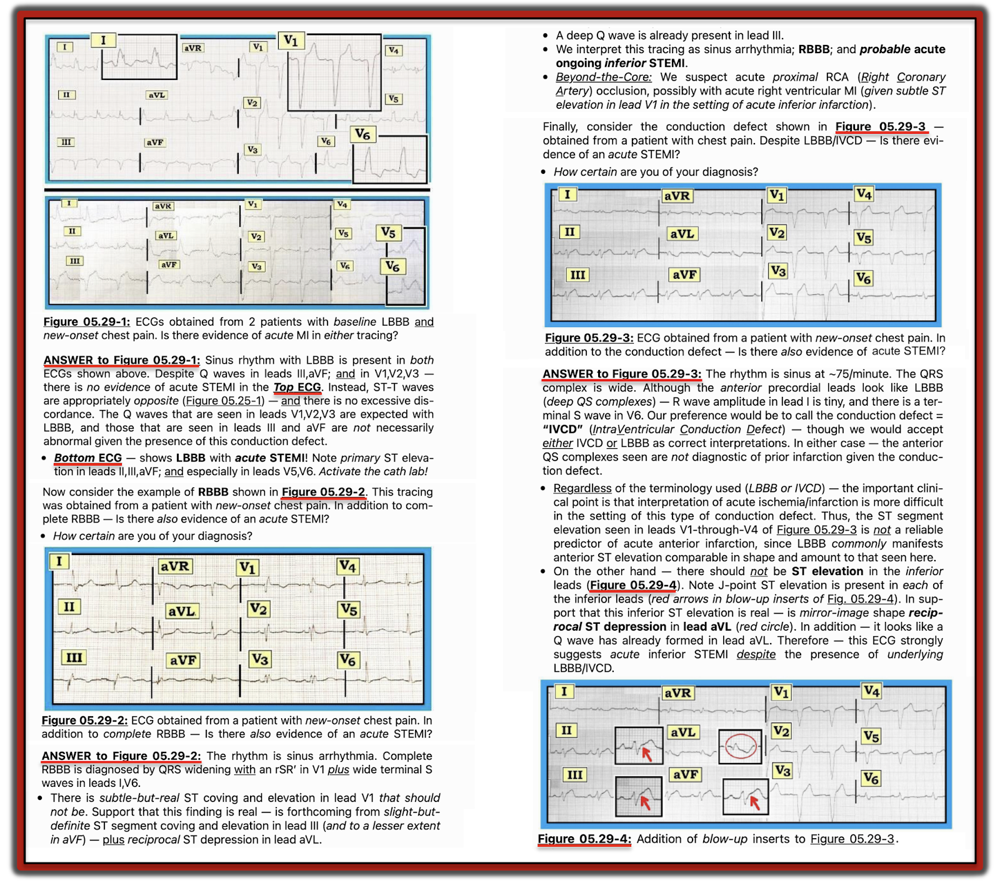

ECG Blog #221 (ECG MP-38) — Bạn có cần lấy hồ sơ bệnh án của bệnh nhân ra xem không?
Bạn được phân công làm “Đọc lại điện tâm đồ” trong ngày — nghĩa là bạn cần xem lại tất cả các điện tâm đồ được ghi tại Trung tâm Cấp cứu đông đúc của bạn — để đảm bảo không có gì bị bỏ sót.
Thông tin duy nhất bạn được cho biết về bệnh nhân có điện tâm đồ ở Hình-1 — là điện tâm đồ này của một phụ nữ 83 tuổi.
- Bạn sẽ đọc điện tâm đồ 12 chuyển đạo này NHƯ THẾ NÀO?
- Đây có phải là ca mà bạn cần lấy hồ sơ bệnh án của bệnh nhân ra xem không?
- Khả năng đã xảy ra một biến cố tim gần đây là CAO ĐẾN MỨC NÀO?


=======================================
LƯU Ý #1: Đến đây, một số bạn đọc có thể muốn nghe ECG Audio PEARL dài 11:30 phút trước khi đọc Suy nghĩ của tôi về điện tâm đồ ở Hình-1. Bạn cứ thoải mái xem lại Suy nghĩ của tôi về bản ghi này vào bất kỳ lúc nào (nằm bên dưới ECG MP-38).
=======================================

Hôm nay: ECG Media PEARL #38 (11:30 phút Audio) — Ôn lại Chẩn đoán điện tâm đồ Nhồi máu cơ tim cấp khi có BBB.
- Tôi tóm tắt thông tin trong Audio Pearl này ở Hình-2, -3 và -4 trong Phần bổ sung bên dưới. BẤM VÀO ĐÂY — để tải về tệp pdf 6 trang chứa thông tin này.
=======================================
LƯU Ý: Dành cho những ai muốn xem một video ôn tập dễ hiểu minh hoạ cách chẩn đoán các blốc nhánh (Bundle Branch Blocks) trong chưa đến 5 giây — tôi xin nhắc lại từ ECG Blog #204, ECG Media Pearl #22 (13:15 phút Video) của tôi.
- BẤM VÀO ĐÂY — để tải về tệp pdf 12 trang (từ ECG-2014-ePub của tôi) tóm tắt chẩn đoán điện tâm đồ BBB.
ECG Media Pearl #22 (13:15 phút Video) — về Chẩn đoán điện tâm đồ các Blốc nhánh.
=======================================
CÁCH TIẾP CẬN của TÔI với bản ghi này:
Như mọi khi — tôi ưa dùng Cách tiếp cận Hệ thống cho mọi điện tâm đồ tôi gặp (Cách tiếp cận Hệ thống này được ôn lại trong ECG Blog #205). Phân tích mô tả của tôi về điện tâm đồ ở Hình-1 như sau:
- Tần số & Nhịp: Nhịp khá (nhưng không hoàn toàn) đều với tần số ngay dưới 50/phút. Dù biên độ nhỏ, sóng P dương có thấy ở chuyển đạo II, với khoảng PR hằng định — do đó nhịp là nhịp chậm xoang.
Về Các khoảng:
- Khoảng PR có vẻ ở giới hạn trên của bình thường (tức là, không rõ ràng dài hơn 1 ô lớn — do đó không rõ ràng >0,20 giây).
- Phức bộ QRS rộng. Thời gian của một khoảng nên được đánh giá ở chuyển đạo nào thấy rõ điểm khởi đầu và điểm kết thúc của khoảng đó — và ở đó khoảng này có vẻ dài nhất. Thời gian QRS kéo dài hơn 3 ô nhỏ ( = 0,12 giây) ở chuyển đạo V1, tức là rộng.
- ĐIỂM THEN CHỐT (PEARL) #1: Dù bạn ưa dùng hệ thống nào để đọc bản ghi 12 chuyển đạo — điều quan trọng là đánh giá các khoảng ở giai đoạn sớm của quy trình. Lý do là NẾU phức bộ QRS rộng — thì các tiêu chuẩn đánh giá QTc, Trục, Lớn các buồng tim và Thiếu máu cục bộ/Nhồi máu đều thay đổi! Vì vậy, ngay khi bạn nhận ra QRS giãn rộng — DỪNG LẠI — và Tìm ra TẠI SAO QRS Rộng trước khi đánh giá tiếp!
TẠI SAO Phức bộ QRS Rộng?
Như đã bàn trong ECG Media Pearl #22 (ở trên) của tôi — một khi bạn xác nhận nhịp là trên thất — lý do QRS giãn rộng có thể được xác định tiết kiệm thời gian nhất bằng cách tập trung vào 3 chuyển đạo MẤU CHỐT (tức là, chuyển đạo I, V1 và V6).
- Chuyển đạo V1: Bình thường — chuyển đạo V1 chủ yếu âm. Đó là vì hoạt động điện ưu thế bình thường hướng ra xa chuyển đạo bên phải này, và về phía thất trái lớn hơn. Do đó — việc thấy một phức bộ QRS chủ yếu dương, dưới dạng phức bộ QR như ở chuyển đạo V1 của Hình-1 — không phải là dấu hiệu “bình thường”. Và khi phức bộ QRS chủ yếu dương này ở V1 rộng và đi kèm sóng S tận rộng ở các chuyển đạo bên I và V6 — thì đã thoả tiêu chuẩn RBBB (blốc nhánh phải — Right Bundle Branch Block). Đây là trường hợp ở Hình-1. Dù sóng S ở cả chuyển đạo I và V6 không quá sâu — các sóng S tận này thực sự rộng (tức là, ít nhất 1 ô nhỏ, do đó thời gian ≥0,04 giây) — và, do đó xác nhận chẩn đoán RBBB.
- ĐIỂM THEN CHỐT (PEARL) #2: Khi RBBB “điển hình” — phức bộ QRS ở chuyển đạo V1 sẽ có dạng rsR’, trong đó sóng r khởi đầu nhỏ và mảnh — sóng S theo sau sóng r nhỏ này đi xuống dưới đường đẳng điện — và, sóng R’ tận cao và mảnh (tạo thành “tai thỏ” bên phải cao hơn). Mất sóng r dương khởi đầu ở chuyển đạo V1, dẫn đến dạng QR như ở Hình-1 (với sóng Q rộng và sâu, theo sau là sóng R cao) gợi ý mạnh rằng đã xảy ra nhồi máu vách vào một thời điểm nào đó.
Quay lại với cách tiếp cận hệ thống của chúng tôi:
Giờ chúng ta đã xác định được lý do QRS giãn rộng (là RBBB hoàn toàn) — Chúng ta có thể quay lại Cách tiếp cận Hệ thống để đánh giá các thông số còn lại:.
- QTc: Khoảng còn lại cần đánh giá là QTc. Bản thân blốc nhánh có thể làm QTc kéo dài. Tuy vậy — QT dài nhất mà tôi đo được ở Hình-1 có vẻ vào khoảng ~480 msec, mà khi xét đến nhịp chậm và rối loạn dẫn truyền thì có lẽ không kéo dài. (Nhìn bằng mắt — khoảng QT rõ ràng ngắn hơn một nửa khoảng R-R — dù giá trị của phép đo này kém hơn hẳn khi tần số thất chậm như vậy).
TRỤC — “Ý nghĩa” của trục bị thay đổi trong RBBB. Lý do là hướng zig-zag của hoạt động điện do rối loạn dẫn truyền này. Tức là — vectơ khởi đầu từ trái sang phải của khử cực vách được bảo tồn (vì rối loạn dẫn truyền trong RBBB nằm ở phía phải của vách) — tiếp theo là khử cực LV (thất trái — không bị blốc; trong thời gian này sóng khử cực đi ngược về bên trái) — và cuối cùng, quay trở lại sang phải, vì RV “bị blốc” là phần cuối cùng của tim được khử cực.
- Về lâm sàng — điều duy nhất chúng ta quan tâm về trục trong RBBB là liệu có: i) RBBB +LAHB; ii) RBBB + LPHB; hoặc, iii) RBBB không kèm blốc phân nhánh nào. Ở Hình-1, không có LAHB lẫn LPHB (LAHB không có vì QRS ở chuyển đạo II không chủ yếu âm — và — LPHB không có vì không có sóng S sâu ở chuyển đạo I). Do đó — có RBBB không kèm blốc phân nhánh nào.
Lớn các buồng tim: Không có RAA, LAA hay RVH. Có LVH.
- Tiêu chuẩn bất thường nhĩ không bị ảnh hưởng bởi blốc nhánh. Tuy nhiên, vì RBBB và LBBB làm thay đổi trình tự của cả khử cực thất và tái cực thất — tiêu chuẩn điện thế và các thay đổi sóng ST-T của “tăng gánh” thất trái hay thất phải sẽ khó nhận diện hơn.
- Tuy vậy — vì LV khử cực không bị đối kháng trong RBBB (vì khử cực của thất phải nhỏ hơn nhiều bị chậm lại do rối loạn dẫn truyền này) — ảnh hưởng của RBBB lên chẩn đoán LVH trên điện tâm đồ có thể không nhiều. RBBB có thể ảnh hưởng đến mức nào lên chẩn đoán LVH trên điện tâm đồ thì khó dự đoán. Vì vậy, dù biết rằng còn thiếu dữ liệu và câu trả lời xác đáng — điện thế tăng đáng kể mà chúng ta thấy ở Hình-1 của sóng R ở chuyển đạo aVL (tức là, ~15 mm), cùng với ST-T dẹt không đặc hiệu thấy ở chuyển đạo này (một dạng tương đương "tăng gánh"?) gợi ý ít nhất là có khả năng LVH.
Về Thay đổi Q-R-S-T:
- Sóng Q — thấy ở chuyển đạo I và V1. Sóng Q ở chuyển đạo aVL vừa sâu hơn vừa rộng hơn mức mong đợi của một sóng q vách bình thường — nên có thể phản ánh nhồi máu thành bên cũ. Như đã nói ở trên — sóng Q rất lớn ở chuyển đạo V1 gợi ý nhồi máu vách cũ.
- Tăng tiến sóng R — ít liên quan hơn trong bản ghi này, vì RBBB theo định nghĩa tạo ra sóng R ưu thế ở chuyển đạo V1.
ĐIỂM THEN CHỐT (PEARL) #3: Có thay đổi ST-T nguyên phát ở nhiều chuyển đạo. Như đã bàn trong ECG Media Pearl #22 (ở trên) của tôi và cả trong ECG Blog #204 — đáp ứng bình thường của sóng ST-T ở 3 chuyển đạo MẤU CHỐT khi có BBB là hướng ngược chiều với độ lệch cuối cùng của QRS.
Trước hết xét 3 chuyển đạo MẤU CHỐT — sóng ST-T ở chuyển đạo I, V1 và V6 đều bất thường rõ.
- Ở cả hai chuyển đạo bên ( = chuyển đạo I và V6) — đoạn ST có dạng vòm (coving) bất thường, và sóng T đảo ngược đối xứng (thay vì cho thấy đoạn ST dốc lên bình thường với sóng T dương — như minh hoạ bên dưới ở Hình-2 trong Phần bổ sung).
- Ở chuyển đạo V1 — đoạn ST có vẻ chênh lên nhẹ, và sóng T dương rõ (trong khi đáp ứng mong đợi với RBBB là có ST-T chênh xuống phần nào ở chuyển đạo V1 — như thấy ở Hình-2).
Tiếp theo xét các chuyển đạo lân cận:
- Chuyển đạo V2 có sóng T dương tương tự như ở chuyển đạo V1. Bình thường, với RBBB đơn thuần — phải có ST-T chênh xuống ở ít nhất vài chuyển đạo trước.
- Các chuyển đạo trước tim còn lại ( = chuyển đạo V3, V4, V5 và V6) đều có đoạn ST dạng vòm bất thường và sóng T đảo ngược khá sâu, đối xứng, rõ ràng là bất thường.
- Đoạn ST dạng vòm và sóng T đảo ngược khá sâu, đối xứng tương tự cũng thấy ở mỗi chuyển đạo dưới ( = chuyển đạo II, III, aVF).
Tổng hợp lại:
Điện tâm đồ ở Hình-1 có các bất thường sau:
- Nhịp chậm xoang khá rõ.
- RBBB
- LVH có khả năng
- Sóng Q ở chuyển đạo aVL sâu hơn mong đợi, ý nghĩa chưa chắc chắn (có thể chỉ điểm nhồi máu thành bên cũ).
- Dạng QR ở chuyển đạo V1 — với sóng Q khởi đầu sâu và rất rộng ở bệnh nhân RBBB này (gợi ý mạnh nhồi máu vách cũ vào một thời điểm nào đó).
- Bất thường sóng ST-T rõ rệt ở không dưới 10 trên 12 chuyển đạo — mà ở phụ nữ 83 tuổi này thì gợi ý mạnh thiếu máu cục bộ, nếu không phải là nhồi máu gần đây (có thể rất gần đây).
- ĐIỀU CỐT LÕI: Cách duy nhất để xác định các bất thường trên là mới — gần đây — hay cũ — là lấy hồ sơ bệnh án của bệnh nhân này ra xem và có thể liên lạc với bệnh nhân (tuỳ theo thông tin và các điện tâm đồ bổ sung tìm được trong hồ sơ).
===============
Các bài ECG Blog liên quan đến ca Hôm nay:
- ECG Blog #205 — Ôn lại Cách tiếp cận hệ thống của tôi để đọc điện tâm đồ 12 chuyển đạo (được trình bày trong Hình-2 và -3, và là chủ đề của Audio Pearl MP-23 trong Blog #205).
- ECG Blog #204 — Ôn lại chẩn đoán điện tâm đồ các Blốc nhánh (RBBB/LBBB/IVCD).
- ECG Blog #203 — Ôn lại chẩn đoán điện tâm đồ về Trục và các Blốc phân nhánh. Để ôn lại hình dạng QRS trong các Blốc hai phân nhánh (RBBB/LAHB; RBBB/LPHB) — Xem video ECG Media Pearl #21 trong bài blog này.
===============
PHẦN BỔ SUNG (5/5/2021):
Tôi trích lại ở Hình-2, -3 và -4 bên dưới phần 6 trang trong ECG-2014-ePub của tôi về Chẩn đoán điện tâm đồ Nhồi máu cơ tim cấp khi có Blốc nhánh.
- BẤM VÀO ĐÂY để tải về tệp pdf 6 trang chứa thông tin trong các Hình này.





